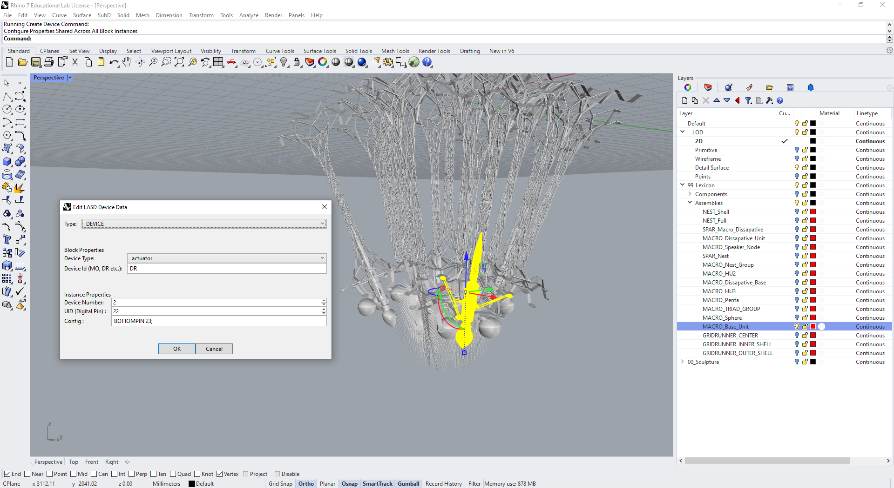
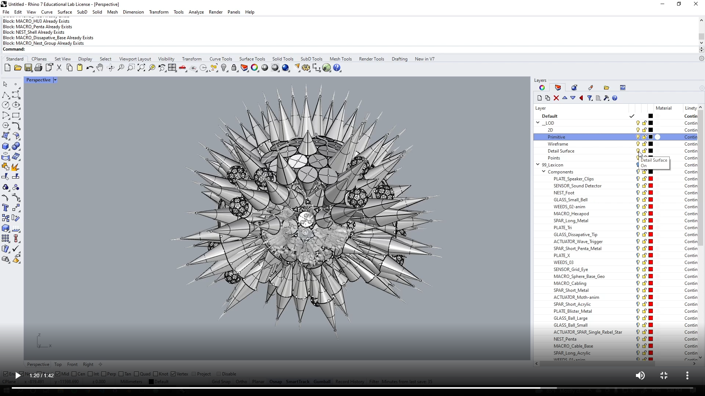

Rhino Install
Installing the LASD Toolkit - Rhino¶
1) Run the Install Script:¶
To install the LASD toolkit for Rhino, navigate to the folder where you have cloned the LASD Repository. Within this folder you should find the LASD_Rhino_Install.bat file, located at:
%Your_Chosen_Folder%\Living_Architecture_Sculpture_Description
\RhinoScript\LASD_Rhino_Install.bat
Right click the batch file and select "Run as Administrator". The batch file will prompt you to enter the Rhino version you're installing to (6.0 or 7.0). Entering your Rhino version number and hitting enter will create a symbolic link (symlink) for the Plug-in in the Rhino Plug-In's directory. Using a symbolic link allows the LASD toolkit to stay up to date when updating from GitHub Desktop.

2) Start Python in Rhino:¶
Open up Rhino and run the command "EditPythonScript", and then close the window that opens. This command needs to be run once to make sure Rhino has started python, otherwise plugin commands will not appear in the command bar.
3) Use an LASD Command:¶
The following commands are available in Rhino:
ImportLASD : Imports an LASD .json file
ExportLASD: Exports an LASD .json file
CreateLayersLASD: Creates an LASD Layer structure, with Sculpture, Lexicon and Level of Detail Layers
BlockLASD: A wrapper for Rhino's normal Block command, this makes a block and automatically adds a copy of it to a named layer in the appropriate Lexicon section
DeviceLASD: Opens the UI to add or edit device data on blocks that represents sensors, actuators, nodes or RPis

Optional: Rhino Plug-ins directory¶
If you need to delete the LASD toolkit from Rhino, the location that the batch file creates the symbolic link in is:
For Rhino 7:
%UserProfile%\AppData\Roaming\McNeel\Rhinoceros\Plug-ins\PythonPlugins\LASDManager{fd72a2df-89d1-42e5-a465-9059768362ce}
For Rhino 6:
"%UserProfile%\AppData\Roaming\McNeel\Rhinoceros\Plug-ins\LASDManager {fd72a2df-89d1-42e5-a465-9059768362ce}"
